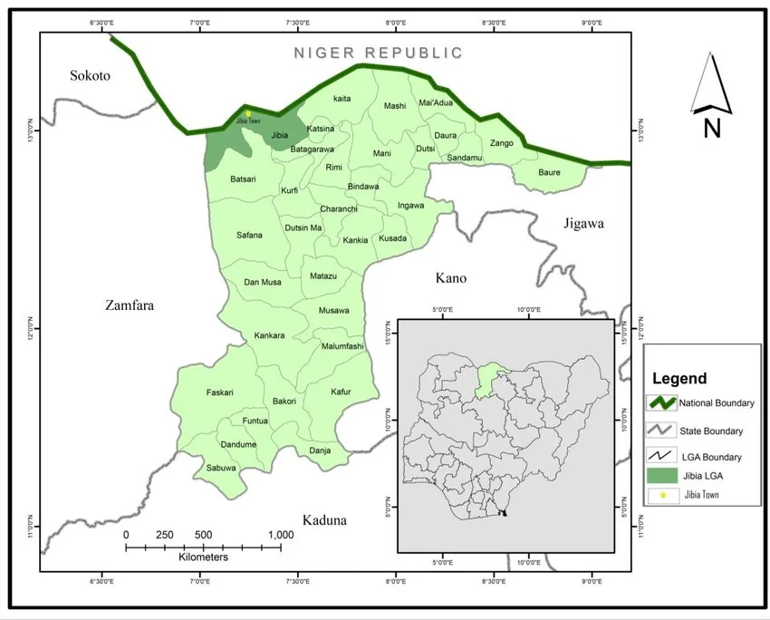
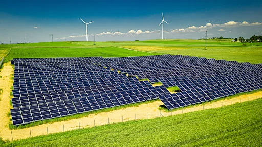
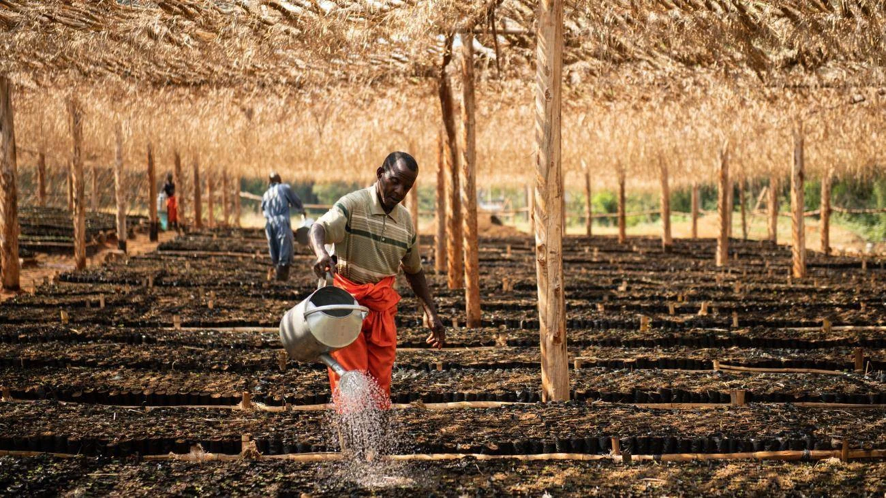

1. Introduction & Regional Context: Katsina State
Katsina State, located in the northwestern geopolitical zone of Nigeria and bordering the Republic of Niger to the north, Kano and Jigawa States to the east, Kaduna State to the south, and Zamfara State to the west, possesses immense demographic and natural potential yet confronts structural bottlenecks that impede inclusive growth.
Endowed with expansive arable farmlands, solid mineral deposits, high solar-irradiation potential, and historic commercial corridors across its 34 Local Government Areas (LGAs), Katsina is a pivotal region for agriculture, agro-processing, and resource-based industries. With a population exceeding 8 million residents—predominantly Hausa and Fulani communities—converting demographic scale and natural endowments into durable prosperity requires a development model that simultaneously builds human capabilities and inter-sectoral economic linkages.

Five Core Objectives of the KELCM Framework
- 1. Enhance Educational Infrastructure & Equitable Access: Modernize rural and urban schools, expand scholarships and school feeding, and align vocational curricula with labour-market demand.
- 2. Strengthen Healthcare Systems & Expand Primary Services: Upgrade primary healthcare centres, deploy mobile rural clinics, and scale preventive public health and maternal-child campaigns.
- 3. Modernize Agriculture & Agro-Processing Industries: Transition from subsistence farming to mechanized, irrigated production linked directly to value-adding agro-processing clusters (millet, rice, groundnuts, hibiscus, and shea).
- 4. Invest in Sustainable Mining & Renewable Energy Projects: Enforce environmentally responsible mineral extraction while deploying utility-scale and off-grid solar and wind power.
- 5. Upgrade Transportation, Energy & Water Infrastructure: Connect rural production zones to regional markets through resilient road networks, grid/mini-grid power, and clean water and irrigation systems.
2. Theoretical Framework: Synthesizing Sen, Hirschman & Sachs
KELCM is anchored in three complementary schools of development economics, ensuring that physical capital investments never outpace human capability expansion, and that social spending is reinforced by productive sectoral linkages.
| Theoretical Pillar | Core Economic Proposition | Operational Application in Katsina State (KELCM) |
|---|---|---|
| 1. Amartya Sen's Capability Approach | Development must be evaluated by the expansion of individuals' substantive freedoms and capabilities to lead lives they value—enabled by education, health, and social safety nets. | Drives Pillar I (Human Capital Development): rural school renovation, girls' scholarships, vocational skills centers, primary healthcare expansion, and women/youth microfinance. |
| 2. Albert Hirschman's Theory of Economic Linkages | Strategic, targeted investments in key leading sectors generate powerful backward and forward linkages, positive externalities, and spillover momentum across the wider economy. | Drives Pillar II (Strategic Sectoral Investment): connecting farm modernization (backward linkage) to agro-processing clusters, solar mini-grids, sustainable mining, and feeder roads (forward linkages). |
| 3. Jeffrey Sachs' Comprehensive Development Approach | Escaping structural poverty traps requires an integrated, multi-dimensional strategy that aligns simultaneous public and private investments across health, education, infrastructure, and governance. | Drives Pillar III (Integrated & Sustainable Development): multi-sectoral coordination, Public-Private Partnerships (PPPs), environmental conservation, and SDG-indexed monitoring. |

3. Pillar I: Human Capital Development
Drawing directly on Amartya Sen's Capability Approach, Pillar I treats education, health, and economic empowerment not merely as welfare expenditures, but as the foundational capabilities that enable citizens of Katsina State to participate productively in a modernizing economy.
3.1 Education: Infrastructure, Equity, Vocational Skills & Teacher Development
- Infrastructure Improvement: Upgrade and expand educational facilities across Katsina State to ensure safe, climate-resilient learning environments, prioritizing the construction of new schools and renovation of existing classrooms in underserved rural LGAs.
- Access and Equity: Enhance access to quality basic and secondary education by implementing targeted scholarships, financial aid, and school feeding programmes that boost enrolment and reduce dropout rates—with dedicated focus on girls and marginalized rural households.
- Vocational & Digital Training: Establish modern vocational and technical training centers offering practical skills (agritech, solar installation, ICT, garment manufacturing, and agro-processing) co-designed with local industries.
- Teacher Training and Pedagogical Development: Invest in continuous professional development for teachers across Katsina State to raise instructional quality, digital literacy, and student learning outcomes.

3.2 Healthcare: Facility Upgrades, Mobile Clinics, Preventive Care & Workforce
- Healthcare Infrastructure: Expand and upgrade primary healthcare centers (PHCs) across all 34 LGAs and equip general hospitals with modern diagnostic and emergency medical equipment.
- Service Expansion via Mobile Clinics: Increase rural healthcare reach by deploying mobile health clinics to remote settlements and strengthening essential medicine and cold-chain supply lines.
- Preventive Care & Public Health Campaigns: Execute state-wide public health education campaigns focused on routine immunization, maternal and neonatal health, clean water, sanitation, and climate-sensitive disease prevention.
- Healthcare Workforce Development: Recruit, train, and incentivize additional nurses, midwives, community health extension workers (CHEWs), and physicians to close rural staffing deficits.
3.3 Empowerment Programmes: Social Safety Nets, Youth/Women Enterprise & Civic Agency
- Social Safety Nets: Implement transparent, targeted social protection programmes—including conditional cash transfers, seasonal food assistance, and housing support—to cushion low-income families against economic and climate shocks.
- Women & Youth Economic Empowerment: Launch microfinance schemes, startup seed funds, business training, and mentorship programmes to catalyse women- and youth-owned small enterprises.
- Community-Based Development: Strengthen community-based organizations (CBOs) and local governance structures so citizens actively shape, monitor, and maintain local development projects.

4. Pillar II: Strategic Sectoral Investment
Guided by Albert Hirschman's linkage theory, Pillar II channels capital into three high-multiplier sectors—Agriculture & Agro-Processing, Sustainable Mining & Renewable Energy, and Enabling Infrastructure—where investments create dense backward and forward linkages across Katsina State's urban and rural economy.
4.1 Agriculture and Agro-Processing Clusters
- Agricultural Modernization: Introduce climate-smart agricultural techniques, expanded irrigation schemes, drought-tolerant high-yield seed varieties, and mechanized farming equipment to raise smallholder yields.
- Value-Adding Agro-Processing Clusters: Establish dedicated agro-processing zones across Katsina's agricultural belts to process raw commodities—specifically millet, sorghum, rice, groundnuts, cotton, and hibiscus—into packaged goods, retaining value and creating off-farm employment.
- Cooperative Market Access: Strengthen farmer cooperatives and rural feeder-road connections to improve smallholder bargaining power, reduce post-harvest losses, and connect directly with national and cross-border AfCFTA markets.


4.2 Sustainable Mining and Renewable Energy
- Environmentally Regulated Mining: Formalize artisanal and small-scale mining under strict environmental safeguards, land-reclamation rules, and occupational safety standards while building local technical capacity for mineral processing.
- Solar & Wind Renewable Energy Projects: Harness Katsina State's exceptional solar irradiance and wind corridors (building on lessons from the Lambar Rimi wind farm corridor) through utility-scale solar PV parks and decentralized solar mini-grids for agro-processing zones, schools, clinics, and rural communities.
- Local Green Industry Support: Link clean energy supply directly to local small and medium enterprises (SMEs) to cut diesel dependence and lower operating costs.

4.3 Infrastructure Development: Transport, Energy & Water Systems
- Transportation Networks: Upgrade and expand inter-LGA and rural feeder road networks to accelerate the movement of farm produce and manufactured goods while lowering transport costs.
- Energy Grid & Off-Grid Integration: Strengthen electricity distribution infrastructure alongside decentralized renewable mini-grids to guarantee reliable power for households and industrial clusters.
- Clean Water Supply & Irrigation Conservation: Expand municipal and rural borehole/reticulated water systems, implement watershed and dam conservation measures, and modernize agricultural irrigation canals.

5. Pillar III: Integrated & Sustainable Development
Applying Jeffrey Sachs' Comprehensive Development Approach, Pillar III ensures that human capital and sectoral investments operate as a single coordinated system aligned with environmental sustainability and global development benchmarks.
1. Multi-Sectoral Programmes & Climate Resilience
Coordinate interventions across education, healthcare, water, energy, and agriculture so projects reinforce one another (for example, pairing rural school renovations with solar mini-grids, borehole water supply, and school tree nurseries). Embed environmental conservation, shelterbelt afforestation, and climate resilience across every state capital project.
2. Public-Private Partnerships (PPPs) & Joint Ventures
Establish transparent PPP frameworks and joint-venture incentives that bring private investment, development finance institutions, and civil society innovation into agro-processing zones, renewable energy mini-grids, and vocational training centers.
3. Alignment with the UN Sustainable Development Goals (SDGs)
Map every KELCM budget line and project milestone directly to the United Nations Sustainable Development Goals—specifically SDG 1 (No Poverty), SDG 2 (Zero Hunger), SDG 3 (Good Health), SDG 4 (Quality Education), SDG 5 (Gender Equality), SDG 6 (Clean Water), SDG 7 (Affordable Clean Energy), SDG 8 (Decent Work), SDG 9 (Industry & Infrastructure), and SDG 13 (Climate Action)—backed by public quarterly monitoring and feedback loops.
6. Implementation Strategy & Sectoral Action Matrix
To translate the Katsina Economic Linkage and Capability Model from theory into measurable execution, Table 2 consolidates the six operational action plans across Human Capital Development and Strategic Sectoral Investment.
| KELCM Pillar | Sector | Core Implementation Action Plan | Target Linkage & SDG Outcome |
|---|---|---|---|
| Pillar I: Human Capital | 1. Education | Construct/renovate rural schools; establish market-aligned vocational & technical centers; train teachers; update curriculum with digital & practical skills. | Skilled youth workforce ready for agro-industry & green jobs (SDG 4, SDG 8). |
| Pillar I: Human Capital | 2. Healthcare | Upgrade rural PHCs & hospitals with modern equipment; train health workers; deploy mobile clinics; run preventive sanitation & immunization campaigns. | Healthy, productive population and reduced maternal/child mortality (SDG 3). |
| Pillar I: Human Capital | 3. Empowerment | Deliver social safety nets for vulnerable households; run entrepreneurship & technical skill workshops; expand women/youth microfinance schemes. | Household poverty reduction and grassroots enterprise growth (SDG 1, SDG 5). |
| Pillar II: Sectoral Investment | 4. Agriculture & Agro-Processing | Invest in irrigation, high-yield seeds, and mechanization; build agro-processing clusters (millet, rice, groundnuts); link farmers to markets via cooperatives. | Higher farm incomes, rural value capture, and food security (SDG 2, SDG 9). |
| Pillar II: Sectoral Investment | 5. Mining & Renewable Energy | Enforce sustainable mining regulations; invest in utility-scale and off-grid solar/wind projects; power local industries with clean energy. | Clean energy access, green jobs, and reduced ecological degradation (SDG 7, SDG 13). |
| Pillar II: Sectoral Investment | 6. Infrastructure Development | Upgrade urban-rural road networks; strengthen electricity distribution; expand clean household water supply, sanitation, and irrigation systems. | Lower transaction costs and integrated regional market connectivity (SDG 6, SDG 9). |